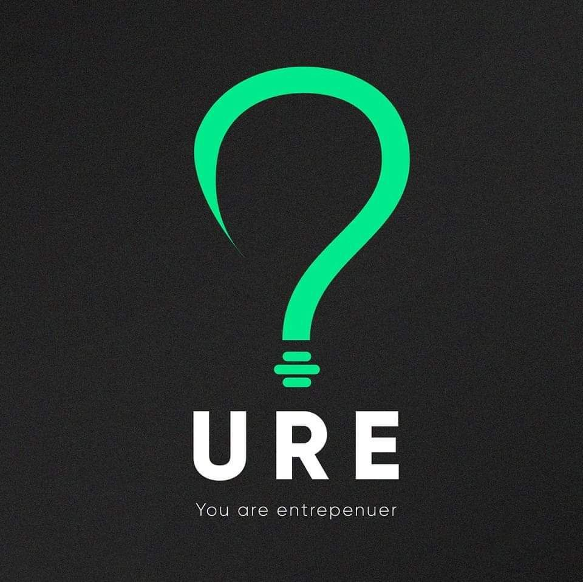
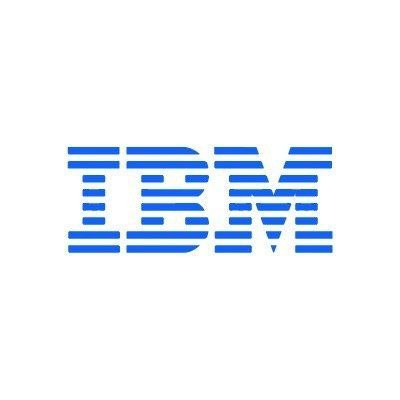
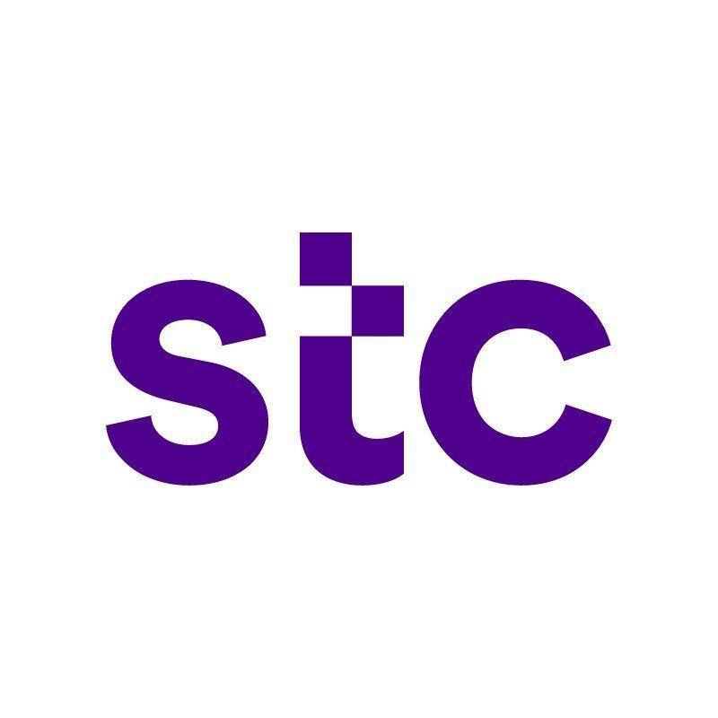

"URE EGYPT CONFERENCE" on 6/8/2023 at Faculty of Science, Tanta University
This conference teaches me how to turn my scientific research into a viable business. I learn the following core skills:
- Idea Generation: I learn how to identify a scientific problem that I am passionate about and have the expertise to solve. I learn how to use various techniques, such as brainstorming, mind mapping, and SWOT analysis, to
generate and evaluate ideas for potential solutions.
- Team Formation: I learn how to find co-founders and collaborators who share my vision and have complementary skills and resources. I learn how to use various tools, such as LinkedIn, AngelList, and Meetup, to network and
recruit team members. I also learn how to manage team dynamics, roles, and responsibilities.
- Validation and BMC: I learn how to validate my idea by testing it with potential customers and stakeholders. I learn how to use various methods, such as surveys, interviews, and experiments, to collect feedback and data.
I also learn how to create a Business Model Canvas (BMC) to map out the key elements of my business model, such as the value proposition, the customer segments, the channels, the revenue streams, and the cost structure.
- Prototype Development: I learn how to build a prototype of my product or service that demonstrates its core features and benefits. I learn how to use various tools, such as Arduino, Raspberry Pi, and 3D printing, to create
physical prototypes. I also learn how to use various software platforms, such as Python, MATLAB, and RStudio, to create digital prototypes.
- MVP Launch: I learn how to develop a Minimum Viable Product (MVP) that can be launched to the market and generate feedback and revenue. I learn how to use various tools, such as WordPress, Shopify, and Stripe, to create
and sell online products or services. I also learn how to use various tools, such as Google Analytics, Mailchimp, and HubSpot, to measure and optimize my online performance.
- Start Up Establishment: I learn how to establish my start up as a legal entity and secure funding, partnerships, and resources to grow my business. I learn how to choose the best legal structure for my start up, such as
sole proprietorship, partnership, or corporation. I also learn how to pitch my idea to investors, partners, and customers using various tools, such as PowerPoint, Prezi, and Canva.
Basics of Scientific Research (Training)
This training teaches me the fundamentals of scientific research and how to apply them in practice. I learn the following topics:
- Scientific Research Methodology: I learn how to conduct research using a systematic and rigorous approach. I learn how to define a research problem, formulate a research question, review the literature, design an experiment,
collect and analyze data, and report the findings.
- Scientific Research Principles: I learn the basic principles and concepts that underlie scientific research. I learn how to use logic, evidence, and reasoning to draw valid conclusions. I learn how to evaluate the quality,
reliability, and validity of scientific information.
- Scientific Research Skills: I learn the essential skills for conducting and communicating scientific research. I learn how to use various tools and techniques for data analysis, such as statistics, graphs, tables, and charts.
I learn how to write a clear and concise research report, using proper citation and formatting styles.
- Scientific Research Ethics: I learn the ethical issues and challenges that arise in scientific research. I learn how to respect the rights and dignity of human and animal subjects, avoid plagiarism and fabrication, acknowledge
sources and contributions, and adhere to professional standards and codes of conduct.
Microsoft learn AI Skills Challenge
This challenge shows me how to use Azure Machine Learning, a cloud-based platform for creating and managing machine learning solutions. I learn the following topics:
- Machine Learning Basics: I learn what machine learning is and how it works. I learn the different types of machine learning, such as supervised, unsupervised, and reinforcement learning. I learn the key concepts and terminology
of machine learning, such as data, features, labels, models, algorithms, and metrics.
- Azure Machine Learning Studio: I learn how to use Azure Machine Learning studio, a web-based interface for creating and publishing machine learning models without writing code. I learn how to use drag-and-drop modules to
prepare data, train models, evaluate results, and deploy solutions.
- Azure Machine Learning Designer: I learn how to use Azure Machine Learning designer, a graphical interface for building machine learning pipelines. I learn how to use pre-built modules and custom code modules to create
end-to-end workflows for data ingestion, transformation, modeling, scoring, and deployment.
- Azure Machine Learning SDK and CLI: I learn how to use Azure Machine Learning SDK and CLI, which are programmatic interfaces for interacting with the Azure Machine Learning workspace. I learn how to use Python or R code
or command-line instructions to create and manage resources, experiments, models, endpoints, and datasets.
Introduction to Front-End Development
This course introduces me to the basics of web development. I gain the following core skills:
- Web Development Roles: I learn the difference between front-end, back-end, and full-stack developers. I learn what each role entails, what skills and tools they use, and how they collaborate to create web applications.
- HTML and CSS: I learn how to create and style a webpage with HTML and CSS. I learn the syntax and structure of HTML, the language of the web. I learn how to use CSS, the language of design, to add colors, fonts, layouts,
and animations to my webpage.
- UI Frameworks: I learn the benefits of working with UI frameworks. I learn how to use Bootstrap, a popular UI framework, to make my webpage responsive and attractive. I learn how to use Bootstrap's components, grids, and
utilities to enhance my webpage.
Foundations: Data, Data, Everywhere
This course introduces me to the fundamentals of data analytics and the role of a data analyst. I learn the following topics:
- Data Concepts: I learn what data is, how it is analyzed, and what are the components of a data ecosystem.
- Analytical Thinking: I learn how to think analytically and assess my own analytical skills with specific examples.
- Data Tools: I learn how to use spreadsheets, query languages, and data visualization tools for data analytics.
- Data Analyst Role: I learn what a data analyst does, what skills they need, and what jobs they can pursue.
Ask Questions to Make Data-Driven Decisions
This course helps me develop the skills and mindset of a data analyst. I learn the following concepts:
- Structured Thinking: I learn how to think in a structured way, which is essential for data analysis. I learn how to break down complex problems into smaller parts, identify the key questions, and organize the information
logically.
- Data and Decisions: I learn how data can be used to support decision-making processes. I learn how to define the problem, collect and analyze the data, and present the results.
- Problem-Solving Road Map: I learn how to use a problem-solving road map to guide my data analysis projects. I learn how each step of the road map contributes to common analysis scenarios such as descriptive, diagnostic,
predictive, and prescriptive analysis.
- Spreadsheets: I learn how to use spreadsheets to perform basic tasks of the data analyst such as entering and organizing data, applying formulas and functions, creating charts and tables, and formatting and validating data.
Prepare Data for Exploration
This course teaches me how to collect and organize data for data analysis. I learn the following topics:
- Data Collection: I learn how to choose the appropriate data sources and methods for different data analysis projects. I learn how to consider factors such as reliability, validity, timeliness, and ethics when making decisions
about data collection.
- Data Bias: I learn how to identify and avoid bias in data. I learn the difference between biased and unbiased data, and how bias can affect the quality and accuracy of data analysis.
- Databases: I learn what databases are, how they function, and what are their components. I learn how to use databases to store, retrieve, and manipulate data.
- Data Organization: I learn how to organize data in a clear and consistent way. I learn the best practices for naming, labeling, sorting, filtering, and grouping data.

Introduction to Data Analytics
This course introduces me to the field of data analytics and the different data roles and skills. I learn the following concepts:
- Data Analytics: I learn what data analytics is and why it is important for businesses and organizations. I learn the key steps in the data analytics process, which are collecting, wrangling, mining, and visualizing data.
- Data Roles: I learn the different data roles and their responsibilities and skills. I learn how to differentiate between data engineers, data analysts, data scientists, business analysts, and business intelligence analysts.
- Data Structures and Sources: I learn the different types of data structures, such as tabular, hierarchical, network, and text. I learn the different file formats for storing and exchanging data, such as CSV, JSON, XML,
and HTML. I learn the different sources of data, such as databases, web pages, APIs, and social media.
- Data Analysis Process: I learn how to perform data analysis using various tools and techniques. I learn how to collect data from different sources, wrangle data to clean and transform it, mine data to discover patterns
and insights, and visualize data to communicate the results.
Excel Basics for Data Analysis
This course helps me to learn Excel for Data Analysis. I acquire the following core skills:
- Excel Basics: I learn how to perform basic spreadsheet tasks such as navigation, data entry, and using formulas. I learn how to use Excel's interface, shortcuts, and functions to manipulate data efficiently and accurately.
- Data Quality: I learn how to import and clean data in Excel. I learn how to use data quality techniques such as removing duplicates, finding errors, and validating data. I learn how to use tools such as Text to Columns,
Flash Fill, and Data Validation to prepare data for analysis.
- Data Analysis: I learn how to analyze data in spreadsheets by using filter, sort, look-up functions, as well as pivot tables. I learn how to use these features to explore, summarize, and visualize data. I learn how to create
charts, slicers, and dashboards to present data insights.
Python for Data Science, AI & Development
This course teaches me how to use Python for data analysis and web scraping. I learn the following skills:
- Python Basics: I learn how to work with different data types, expressions, variables, and data structures in Python.
- Programming Logic: I learn how to apply Python programming logic using branching, loops, functions, objects, and classes.
- Python Libraries: I learn how to use essential Python libraries like Pandas, Numpy, and Beautiful Soup for data manipulation and analysis.
- Web Data Access: I learn how to access web data through APIs and perform web scraping using Python in Jupyter Notebooks.
Python Project for Data Engineering
This course helps me develop the skills and knowledge of a data engineer using Python. I learn how to:
- Python for Data Engineering: I learn how to use Python for data engineering tasks such as data extraction, transformation, and loading (ETL). I learn how to write efficient and scalable Python code for data processing and
analysis.
- Web Data Collection: I learn how to collect data from the web using Python. I learn how to implement web scraping and use APIs to access web data sources.
- Data Engineering Project: I learn how to apply my data engineering skills to a real project. I learn how to work as a data engineer in a team, follow the best practices, and deliver a high-quality data product.
- Jupyter Notebooks: I learn how to use Jupyter notebooks as a tool for data engineering. I learn how to create, run, and share Jupyter notebooks that contain Python code, data, and visualizations.

Remote work experience (data analysis)
Acquired Skills:
- Utilizing statistical analysis tools.
- Using data for predictions and forecasting.
- Implementing machine learning algorithms.
- Providing appropriate recommendations.
Cybersecurity Essentials
This course teaches me how to secure networks, servers, and applications. I learn the following core skills:
- Security Controls: I learn how to apply security controls for different types of networks, servers, and applications. I learn how to use encryption, authentication, firewalls, and other techniques to protect data and systems
from unauthorized access and attacks.
- Security Principles and Policies: I learn valuable security principles and how to develop compliant policies. I learn how to follow the CIA triad (confidentiality, integrity, and availability) and other best practices for
security management and governance.
- Data Confidentiality and Availability: I learn how to implement proper procedures for data confidentiality and availability. I learn how to ensure that data is only accessible by authorized parties and that data is always
available when needed.
- Critical Thinking and Problem-Solving: I learn how to develop critical thinking and problem-solving skills using real equipment and Cisco Packet Tracer. I learn how to analyze security scenarios, identify risks and vulnerabilities,
and propose solutions.